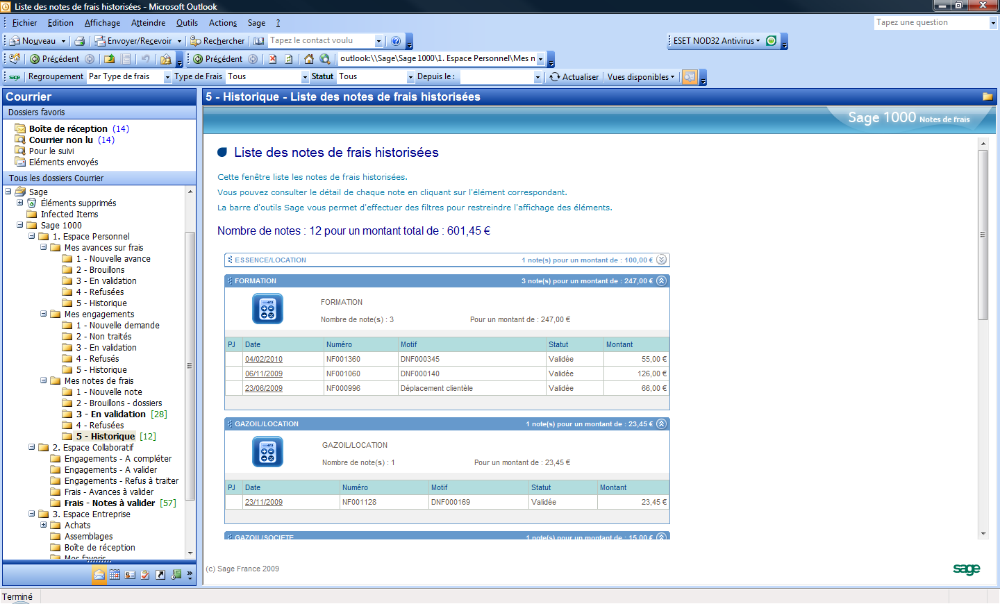

Administration des applications Outlook (outlook)
Sommaire |
Pré-requis
Versions Outlook validées
Les versions d’Outlook validées pour la version 6.00 de Sage 1000 sont 2003 et 2007.
Les versions d’Outlook validées pour la version 6.20 de Sage 1000 sont 2003, 2007 et 2010 (via un setup spécifique).
Les versions d’Outlook validées pour les version 7.xx de Sage 1000 sont 2007 et 2010 ().
Lors de l’installation de l’Addin Outlook, un contrôle des éléments nécessaire à son fonctionnement est effectué et les éléments manquants proposés à l’installation.
Exemple d’éléments pouvant être requis :
- Office2003 PIA dans le cas d’une installation avec Outlook 2003
- Office2007 PIA dans le cas d’une installation avec Outlook 2007
- Office2010 PIA dans le cas d’une installation avec Outlook 2010
- .Net framework redistributable. Version 2.0, 4.0 pour une installation 2010
Autorisation des contenus HTML des dossiers dans Outlook 2007-2010
Pour autoriser le HTML dans la partie explorer de Outlook 2007-2010, il faut changer la valeur dans la base de registre (partie « HKEY_CURRENT_USER ») :
- KEYNAME : Software\ Microsoft\Office\12.0\Outlook\Security (pour Outlook 2007)
- KEYNAME : Software\ Microsoft\Office\14.0\Outlook\Security (pour Outlook 2010)
- Type : Valeur DWORD 32 bits
- Nom de la valeur : NonDefaultStoreScript
- Données de la valeur : 1 (pour autoriser)
Contenu actif dans Outlook
Comme certains folders de type HTML peuvent contenir du javascript, il est nécessaire pour que l'ensemble fonctionne d'autoriser dans Internet Explorer (c), l'exécution de contenu actif.
Principe de déploiement de l’Addin Outlook
Installation des applications pour Outlook
Dans la console d’administration, sur le nœud « Domaine Outlook / Applications Outlook » sélectionner « Installer ou mettre à jour une application Outlook… » à l’aide du menu contextuel.
L’assistant propose l’installation des applications Outlook présentes sur le master :
L’installation d’une application Outlook se fait de la même manière qu’une application Sage 1000, une clé d’authenticité est fournie avec chaque application Outlook au même titre que les applications Sage 1000.
Seule l’application « Sage 1000 publication pour Outlook » est fournit à titre gratuit sur toutes les applications Sage 1000.
L’application Outlook installée sera associée automatiquement aux applications Sage 1000 supportant cette application, dans la partie « Applets Outlook ».
Exemple, actuellement disponible :
Les 4 applications Outlook pour la Suite Financière et Sage 1000 Pilotage pour Outlook pour la Comptabilité.
L’application « Sage 1000 publication pour Outlook » qui permet de mutualiser l’ensemble des publications est associée seule à l’application d’administration.
Dans le cas où l’application Outlook est installée avant l’application Sage 1000, il faudra effectuer cette association manuellement.
{kind=link}
Sur chaque application Outlook, l’option « Visible dans l’arborescence Outlook » permet de générer un dossier supplémentaire dans Outlook. Ce dossier prendra le nom de l’application en question.
Exemple : pour l’application Sage 1000 Note de frais pour Outlook.
Dans Outlook, sans l’option :
Dans Outlook, avec l’option :
Paramétrage des profils Outlook
Un profil Outlook permet de définir la visibilité des applications Outlook en fonction du profil des utilisateurs dans l’entreprise.
Comme le montre l’exemple ci-dessous, les utilisateurs faisant partie du groupe « Service Stocks » auront accès aux applications « Notes de frais » et « Engagements » dans Outlook.
L’utilisateur « Sage », associé au profil « Salarié » n’aura quant à lui une visibilité que sur l’application « Notes de frais ».

Paramétrage des points d’accès Outlook (EndPoints SData)
Le paramétrage d’un point d’accès SData se fait sur un service 1000 dans la console d’administration des services.
En ce qui concerne les notes de frais et les engagements, le paramétrage se fera sur un service Suite Financière. Tandis que pour le pilotage, celui-ci peut se faire sur un service Comptabilité ou Suite Financière.
Description des champs de configuration du point d’accès :
- Libellé du EndPoint visible
- nom du dossier qui apparaitra sous le dossier « Sage » dans Outlook.
- Nom de référence du dataset SData
- nom libre qui regroupe le trinôme « Dossier », « Base de données » et « Société ». Ce nom de référence permettra de restituer les informations (dossier, base, société) dans toutes les URL SData.
- Nom du contrat supporté par le EndPoint
- le contrat pour Sage 1000 est « WSServiceOutlook ».
- Version
- version du point d’accès.
- Dossier du EndPoint
- dossier Sage 1000 exploitée dans Outlook.
- Base de données du EndPoint
- base de données Sage 1000 exploitée dans Outlook.
- Société du EndPoint
- société Sage 1000 exploitée dans Outlook dans le cas où la base de données est multi-société. Il faudra donc créer un EndPoint SData par société à restituer dans Outlook.
Ce point d’accès s’enregistrera dans la table des points d’accès de la base Master utilisé par le « Service 1000 » lors du démarrage de celui-ci.
Des paramétrages standards de point d’accès seront fournis afin de faciliter la création de points d’accès pour Outlook mais aussi pour les clients autres (i Phone, clients externes…).
Ces paramétrages seront accessibles dans le menu contextuel de l’arbre des points d’accès.
Génération de l’AddIn Outlook
Une fois le service paramétré, les applications installées et les profils définis, il faut générer le programme d’installation pour les postes client par le menu « Expert / Envoi de l’Addin Outlook » de la console d’administration.
- URL de la registry SData
- le combo présente toutes les URL des serveurs 1000 enregistrés dans le référentiel. Il faut renseigner l’URL du serveur 1000 qui permettra de retrouver l’ensemble des points d’accès paramétrés sur les différents « service 1000 ».
- Notification par mail aux adresses suivantes (une adresse par ligne)
- permet de renseigner les adresses mails qui vont recevoir la procédure d’installation de l’AddIn Outlook.
- Destination du programme client
- permet de renseigner l’emplacement où sera généra le fichier d’installation.
- Joindre le module d’installation
- permet d’insérer l’exécutable dans le mail.
- Joindre le chemin d’accès au module d’installation
- permet d’insérer le chemin où se trouve le fichier d’installation.
- Commentaire
- permet de saisir un commentaire à destination des utilisateurs.
Installation sur le poste client
Sur le poste client il suffit de lancer le setup pour installer l’AddIn Outlook.
Clés & Mode Licences Nommées
A la différence des applications Sage 1000 « classiques » (Suite Financière, Trésorerie..) qui fonctionnent en mode « Licences simultanées », les applications Sage 1000 pour Outlook fonctionnent en mode Licences Nommées.
En version 6.x et 7.00 :
L'enregistrement d'une clé d’authenticité correspondant à une application Sage 1000 pour Outlook initialise, dans la table des licences, le nombre d'entrées correspondant au nombre de licences de l’application Sage 1000 pour Outlook enregistrée.
Exemple : Si on enregistre une clé d’authenticité sur l’application Sage 1000 Notes de Frais pour Outlook avec 56 licences, dans la table des licences nommées, le produit Sage 1000 Notes de frais pour Outlook sera créé avec 56 licences potentielles qui seront utilisées, soit en les affectant directement à des utilisateurs dans la console d’administration, soit lors de l’utilisation pour la première fois de l’application concernée par un utilisateur se connectant via Outlook.
 En version 7.10 :
En version 7.10 :
Les applications Outlook utilisent une licence Self Service.
Paramétrage des profils Outlook
Profil outlook
Un profil Outlook permet de définir la visibilité des applications Outlook en fonction du profil des utilisateurs dans l’entreprise. Comme le montre l’exemple ci-dessous, les utilisateurs faisant partie du groupe « Service Stocks » auront accès aux applications Notes de frais et Engagements dans Outlook.
L’utilisateur « Sage », associé au profil « Salarié », n’aura, quant à lui, une visibilité que sur l’application Notes de frais.
Configuration des utilisateurs
Les opérations recommandées sont :
- Créer un groupe d'utilisateur par ensemble d'application Outlook (G1)
- Par exemple si des utilisateurs utilisent "Note de frais" et "Engagement" créez un groupe pour ces utilisateurs
- Créer un profil Outlook (P1)
- Associer les applications Outlook (ex : ndf, engagement) au profil Outlook (P1)
- Associer le groupe Outlook (P1) au profil Outlook (P1)
- Associer le groupe (G1) au dossier de l'application métier
Paramétrage des points d’accès Outlook (EndPoints SData)
Le paramétrage d’un point d’accès SData se fait sur un service 1000 dans la console d’administration des services. En ce qui concerne les notes de frais et les engagements, le paramétrage se fera sur un service Suite Financière. Tandis que pour le pilotage, celui-ci peut se faire sur un service Comptabilité ou Suite Financière.
Description des champs de configuration du point d’accès :
- Libellé du EndPoint visible
- Nom du dossier qui apparaîtra sous le dossier « Sage » dans Outlook.
- Nom de référence du dataset Sdata
- Nom libre qui regroupe le trinôme Dossier, Base de données et Société. Ce nom de référence permettra de restituer les informations (dossier, base, société) dans toutes les URL SData.
- Nom du contrat supporté par le EndPoint
- Le contrat pour Sage 1000 est « WSServiceOutlook ».
- Version
- Version du point d’accès.
- Dossier du EndPoint
- Dossier Sage 1000 exploitée dans Outlook.
- Base de données du EndPoint
- Base de données Sage 1000 exploitée dans Outlook.
- Société du EndPoint
- Société Sage 1000 exploitée dans Outlook dans le cas où la base de données est multi-sociétés. Il faudra donc créer un EndPoint SData par société à restituer dans Outlook.
Ce point d’accès s’enregistrera dans la table des points d’accès de la base Master utilisé par le « Service 1000 » lors du démarrage de celui-ci.
Génération de l’AddIn Outlook
Une fois le service paramétré, les applications installées et les profils définis, il faut générer le programme d’installation pour les postes client par le menu Expert / Envoi de l’Addin Outlook de la console d’administration.
URL de la registry Sdata Le combo présente toutes les URL des serveurs 1000 enregistrés dans le référentiel. Il faut renseigner l’URL du serveur 1000 qui permettra de retrouver l’ensemble des points d’accès paramétrés sur les différents « service 1000 ».
Notification par mail aux adresses suivantes (une adresse par ligne) Permet de renseigner les adresses mails qui vont recevoir la procédure d’installation de l’AddIn Outlook.
Destination du programme client Permet de renseigner l’emplacement où sera généré le fichier d’installation. Joindre le module d’installation Permet d’insérer l’exécutable dans le mail. Joindre le chemin d’accès au module d’installation Permet d’insérer le chemin où se trouve le fichier d’installation. Commentaire Permet de saisir un commentaire à destination des utilisateurs.
Installation sur le poste client
Sur le poste client, il suffit de lancer le setup pour installer l’AddIn Outlook.
Outlook
Configuration de l’url de la registry SData
L’installation de l’AddIn Outlook renseigne automatiquement l’URL du serveur hébergeant la registry SData. Cette URL est visible dans le menu « Sage / Configuration registry SData » de Outlook dans la partie « Adresse du serveur hébergeant la registry SData (URL) ».
{kind=link}
Par ce menu, il est également possible de paramétrer manuellement un point d’accès SData pour les autres applications Sage (autre que serveurs 1000) dans la partie « Personnalisé » :
- Display name
- nom du dossier qui va apparaitre dans Outlook.
- Protocol
- http (ou https).
- Server
- nom du serveur. L’adresse IP est autorisée et peut être suivi du numéro du port.
- Server part 2
- pour Sage 1000 = service/server (sf600/server)
- Virtual directory
- doit être sdata, sauf exception (sf600/server/sdata)
- Application
- nom de l’application.
- Contract
- nom du contrat SData qui expose les ressources de l’application (WSServiceOutlook).
- Dataset
- nom repris dans toutes les URL SData.
- User name
- Login de connexion
- Password
- Mot de passe de connexion
Accès aux applications Sage 1000 pour Outlook
Lors du premier chargement de l’addin Outlook, celui-ci va interroger la registry SData définie afin de récupérer la liste des points d’accès paramétrés.
Pour chaque point d’accès, l’Addin Outlook tentera d’utiliser le login de connexion utilisé dans Outlook (généralement le login de connexion Windows pour se connecter au domaine de l’entreprise), pour s’authentifier.
Si l’alias utilisé existe en tant qu’utilisateur Sage 1000, ou, dans le cas d’une utilisation d’un annuaire d’entreprise (LDAP, AD), la connexion se fera directement de manière transparente (sur le principe du SSO, Single Sign On). Dans le cas contraire, une fenêtre d’authentification au point d’accès apparaît :
- Login de connexion
- login de connexion au point d’accès.
- Mot de passe
- mot de passe du login de connexion.
Enregistrer ces informations pour les prochaines connexions : mémorise les informations de connexion lors des prochaines connexions. La fenêtre d’authentification au point d’accès ne sera plus proposée lors des prochains accès au dossier « Sage ».
Détail de l’interface des applications Sage 1000 pour Outlook
Exemple de noeud “Mes notes de frais” dans l’arborescence Outlook
L’exemple ci-dessous montre un exemple d’affichage d’un onglet portail lié à un dossier Outlook.
Exemple de noeud “Mes notes de frais - Historique” dans l’arborescence Outlook
L’exemple ci-dessous montre un exemple d’affichage d’un rendu HTML via une feuille XSL permettant d’appliquer une mise en page lié à un dossier Outlook.

Dans la barre d’outils associée, le bouton « vues disponibles » permet de modifier le rendu des données affichées.
Ici, vue en liste, avec panneau Sage.
Structure des applications Sage 1000 pour Outlook
Les applications Sage 1000 pour Outlook sont présentées dans 3 espaces :
| Espace personnel | Destiné au salarié titulaire du compte Outlook |
| Espace collaboratif | Destiné au manager |
| Espace entreprise | Destiné à la consultation des éditions pilotées |
Espace personnel Dans cet espace, le salarié pourra consulter ses notes de frais, avances sur frais et demandes d’engagement.
Chaque thème est découpé en plusieurs parties :
- Tableau de bord,
- Saisie des documents,
- Suivi des documents (en cours, refusés, historique).
Espace collaboratif Cet espace est dédié au manager et permettra d’assurer le suivi des documents de ses collaborateurs ainsi que de leur validation. Il contient les avances sur frais et notes de frais à valider. Ainsi que les engagements à compléter, à valider et les refus à traiter.
Espace entreprise Cet espace est dédié à l’édition pilotée. On y retrouve l’ensemble des éditions pilotées en fonction de la version de Sage 1000 Edition Pilotée (Comptabilité ou Suite Financière).
Pour plus d’informations sur le déploiement de l’édition pilotée pour la personnalisation de l’accès aux documents, reportez-vous au « Guide de paramétrage d’une solution pilotée ».
Voir aussi :
| Whos here now: Members 0 Guests 1 Bots & Crawlers 0 |